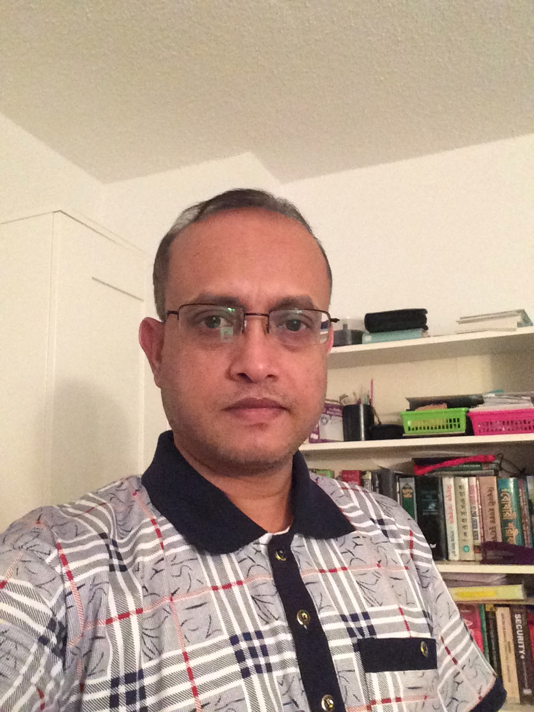

About Me
I am a resourceful and detail-oriented professional with 5+ years of practical programming experience with additional academic experience in the form of a Web Development Bootcamp and a diploma in Computer Science.
I have developed a highly-refined skill set centred on programming and coding using a variety of languages to develop web applications and software. My ability to regularly conduct quality assurance during application development and effectively troubleshoot issues has been influential in mitigating issues after software deployment.
I had been working for computer programmer and software developer at Capital Mercury shirt Corp (Buying House). I developed many software to control the whole business. I was the sole developer to design, develop, testing, implement and maintenance. Based on environment.
I have experience with SDLC and Agile methodology from mockup to rollout
I have finished UftBootCamp Full Stack web development course from University of Toronto and learned new technologies JavaScript, jQuery, node.js, Express, Firebase, mysql, Mongodb and react.js. This course provided me to work with confidence and individually. I have developed many applications front-end to back-end responsive cross browser dynamic with MVC architecture.
I am confident to develop full stack dynamic, cross platform, browser compatibility online applications. I am always try to develop myself through learning new technology if I get chance.
Soft skills I support like: Teamwork, Accountability, Time Management, Adaptability, Work Ethic and etc.